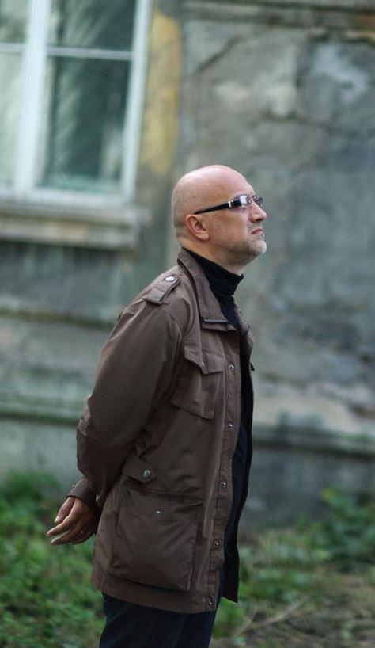
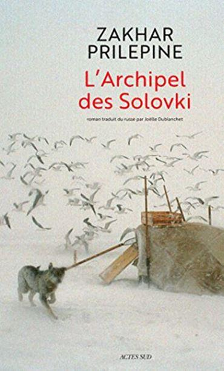
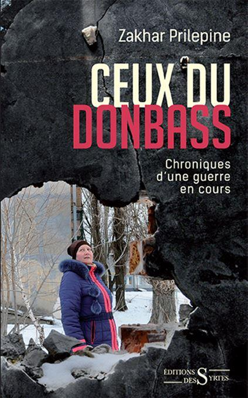

Depuis Tolstoï sans doute, l'engouement des Français pour un écrivain russe n'avait jamais été aussi fort. Personnage inclassable, qui s'est d'abord engagé très jeune dans le national-bolchevisme du très controversé mais assez fascinant Édouard Limonov, récemment décédé, Prilepine se définit aujourd'hui comme un conservateur de gauche. Mais il est avant tout un amoureux éperdu de son immense pays. Petit-fils de moujik, Zakhar Prilepine plonge ses racines au plus profond de la terre russe.
Provincial originaire de Nijni-Novgorod, son esprit n'a été corrompu ni par Moscou, ni par Saint-Petersbourg où sévit parfois une espèce de sentiment de supériorité germanopratin propre à toutes les capitales du monde.
Après des études de philologie, il entre comme officier au sein des OMON (unités spéciales du ministère de l'intérieur) et sera engagé en Tchétchénie entre 1996 et 1999. Ce sera sa première expérience guerrière qu'il relatera dans son roman Pathologies (traduit en français en 2007).
Dans la grande querelle éternelle qui oppose en Russie depuis des siècles, les slavophiles aux europhiles, Prilepine prend parti résolument pour les premiers. En décembre 2014 il publie un texte sans équivoque où il affirme qu'à propos de l’appartenance de la Russie à la culture européenne : « La situation est paradoxale – 0,01 % de la population imposent leur discours de singes aux 99,99 % autres ». Parmi les pro-européens, il cite entre autres, les fameux « philanthropes » Boris Berezovsky, Roman Abramovitch et Mikhaïl Khodorkovsky. La messe est dite... et cochon qui s'en dédit !
Auteur prolifique - plus d'une dizaine de ses livres ont déjà été traduits en français - j'en retiendrais trois qui me semblent refléter le mieux la personnalité complexe et attachante de l'auteur et qui résument parfaitement les trois phases de sa vie trépidante. Tout d'abord, San'kia, récit largement autobiographique qui raconte la vie d'un jeune militant « natsbol » (national-bolchevique) dans une Russie délabrée et désabusée qui tente de se reconstruire après la désastreuse expérience turbo-libérale eltsinienne. C'est l'époque presque nihiliste de la vie de Prilepine où d'une certaine manière, il renoue avec ses aînés décembristes, comme Dostoïevsky, en butte à l'autorité impériale.
L'alcool et la violence extrême semblent les seuls chemins de vie pour une jeunesse perdue qui ne se reconnait pas dans cette société post-soviétique qui a plongé avec délice ou avec horreur dans ce consumérisme qui ne profite qu'aux plus forts, aux plus chanceux ou aux plus dénués de scrupules. Mais déjà dans ce roman de jeunesse, transparait l'esprit « synthèsiste » de l'auteur qui tente de concilier les extrêmes en embrassant la cause perdue de ce qui fit très peur aux bobos occidentaux et qu'ils appelèrent l'idéologie "rouge-brun". Dans cette volonté de marier ensemble la défense des plus faibles et l'amour de la mère patrie, Prilepine dans cet ouvrage affirme son esprit anti-bourgeois que l'on retrouvera tout au long de son œuvre et dans ses engagements guerriers.
Le deuxième ouvrage-clé pour mieux comprendre la profondeur de l'auteur est L'Archipel des Solovki paru en 2015 et qui raconte l'histoire du premier camp de concentration bolchevique installé dans un monastère du grand Nord. Mais dans ce roman-documentaire, et c'est ce qui le distingue de l'œuvre de Soljénitsyne, Prilepine donne la parole - sans juger - à tous ceux qui y vécurent, non seulement les victimes mais aussi leurs bourreaux. Comme il le rapporte dans une interview donnée à Paris à l'occasion de la sortie de son livre : « Dans les années 20 le camp Solovki était surprenant. S’y trouvaient des ecclésiastiques (...) au côté de tchékistes déchus (... ), des socialistes-révolutionnaires, des mencheviks, des paysans, des ouvriers, des membres de l’aristocratie, des comédiens, des musiciens, des représentants de toutes les confessions. C’était une sorte d’arche de Noé ».
Et à travers la figure d'Artiom Goriaïnov, déporté pour cause de parricide, on retrouve la thématique des Frères Karamazov de Fiodor Dostoïevski, où l’un des frères tue le père, dénué de toute humanité. Artiom est la quintessence des trois frères Karamazov dans lesquels on retrouve les traits de caractère symbolisant la complexité de l'homme russe, tout à la fois résigné et actif, croyant et athée, intellectuel et moujik, exalté et lucide, habité par les métaphysiques du bien et du mal.
Là encore, on retrouve dans ce maître-ouvrage, le fil rouge de la pensée de Prilepine qui vise à résoudre les contradictions de l’âme russe et à réconcilier les contraires. Comme il le dit lui-même : « L'archipel des Solovki a été lu par le patriarche de l’Eglise orthodoxe russe, Kirill, dont le père a été prisonnier aux Solovki, et de l’autre, je reçois des lettres de la fille du directeur du camp, Eichmanis, qui me dit que le portrait que je dresse de son père est irréprochable. Ces deux pôles se rejoignent ».
Enfin, dans son livre Ceux du Donbass, chroniques d'une guerre en cours, Prilepine relate son action en faveur des séparatistes en la justifiant ainsi : «Je suis un écrivain russe, et en tant que tel, j’ai un engagement envers les hommes et les femmes qui parlent ma langue».
Mais au-delà de la solidarité charnelle avec ceux qui parlent sa langue et qui le pousse à risquer sa vie dans les tranchées du Donbass, Prilepine retrouve dans cette révolution populaire l'esprit anti-bourgeois qui l'anime. C'est pour lutter contre le monde marchand avec les mineurs et les paysans du Donbass, mais aussi avec les volontaires venus de tout le monde ex-soviétique, que Prilepine s'engage dans les milices populaires de Donetsk.
Et c'est là qu'il se lie d'amitié avec Alexandre Zakharchenko, le président (assassiné en 2018) de la République Populaire de Donetsk. Prilepine le social-patriote et Zakharchenko le descendant de cosaques, monarchiste et chrétien, réaliseront la synthèse essentielle, la grande réconciliation des rouges et des blancs, en défendant ensemble la mère-patrie.
En montrant son amour pour toutes les Russies, Prilepine n'est-il pas en train de guérir le monde russe de ses contradictions en inventant le national-syncrétisme.
Staline et Nicolas II unis contre Mammon ? Qui l'eût cru ?
Partager cette page